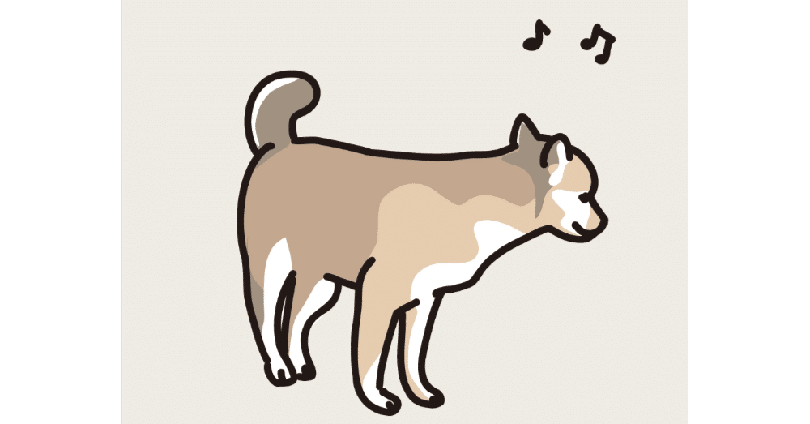

ごきげんよう。皆さん、いかがお過ごしですか？
ん？ そっちはどうなのよって？ ンフ、こちらはかつてないほど調子のいい毎日です！
なんか、いつもより機嫌よくない？
そんな風に思った読者もいることだろう。それもそのはず、今年のGWも色々と出かける先が決まってきたからだ。
連休前に楽しい予定が埋まっていくこの感覚。
思えば、アレに似ている。好きな人ができて、まずは相手に気づかれずにそっとアプローチしてみたら、あっちも意外とその気だったりする、アレ。うん。語彙力がなさすぎて、ちゃんと伝わっているか心配だ。
でも実際、僕にとっては恋仲になるよりたまらなく好きな時間なのである。あの期間限定的なキュンキュンする関係、いいよね……。
って、おっと。一瞬、本エッセイが恋愛を語る回みたいな雰囲気になったけど、僕に恋なんて語らせたら退屈すぎて眠ってしまう人が続出するだろうから、本題に戻しますね(そもそも恋愛の引き出しが少ないのは内緒♡)。
とにもかくにも、(これを書いている3月下旬の)今の僕は常に心がうきうきしている。
平日の朝はどうしたって「あー今日はアレ(仕事)とアレ(仕事)とアレ(仕事)と……アレ(仕事)をやる日かぁ」だとか、「あ～今日は早めに帰れたらいいな^^」みたいなことを思う日が続くわけだが、こと最近に限っては「僕にはアレ(GWで出かける先①)とアレ(GWで出かける先②)とアレ(GWで出かける先③)と……アレ(GWで出かける先④)が待っているのだから、今日もがんばるで！」といった様子なのである。
アレアレばかり言っていたら、昨年の流行語大賞を飾った、阪神タイガースの「アレ（A.R.E.）」(「優勝」を意味するが、選手たちがそれを意識しすぎず普段通りプレーできるように言い始めた言葉)をつい思い出してしまった。
もはや「アレ」は僕にとって、遅れてやってきた流行語なのだ。
そんなに楽しみなGWが終わったら、コイツどうなるんやろ。
そう思った人もいるだろう。実のところ、僕自身それは非常に大きな懸念事項だ。
翌月の6月は祝日がない月だし、天気も梅雨に差し掛かり気持ちも暗澹たるものになってしまうかも……だから、早々に先手を打つことにした。
ご無沙汰な友人に会ってみたり、今まで気になっていたが足を運べていなかった場所へ行ったりする予定を率先して作っておいたのである。おかげで、予約の取れないレストランよろしく、僕の休日はしばらく予定がギュウギュウなのだ。
……ということで今回も他愛のない話にお付き合いいただきありがとうございます(話の着地点が見えず、急に締めにくる男)。
GWがお休みの読者の皆々様、GW後半も全力で楽しんでいきましょうね！！！
……そうだ。思わず満足げな顔で執筆用PCを閉じそうになったが、最後にひとつだけ。
今回の話の大筋とはまったく関係のない話だが、本エッセイマガジン(平々凡々なボクの日常。)のテンションと、ほかのエッセイ集や創作でのテンションとが違いすぎて、リアルの友人から「アレ、ほんまにお前なの！？」と驚かれたこと、ここにご報告いたします。
そりゃそうだよな。だって自分でも読み返した時、内心驚いているんだから。
「アレ、ほんまにワイなの！」
ここでもつい「アレ」を使ってしまったけど、どうか信じてね！